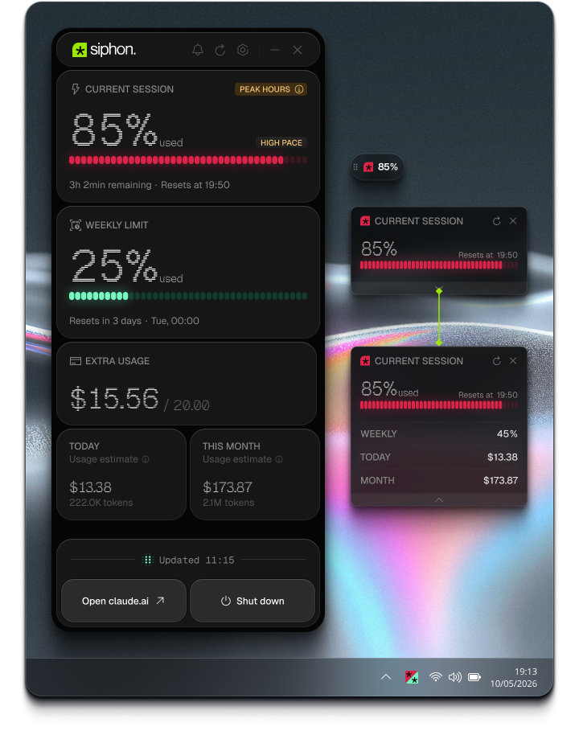
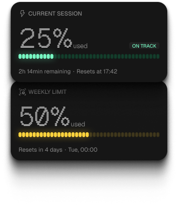
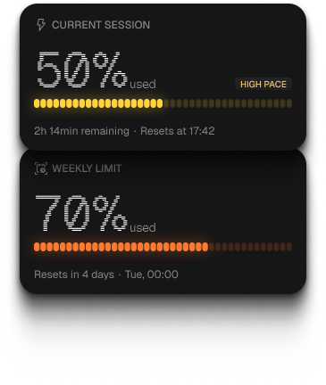
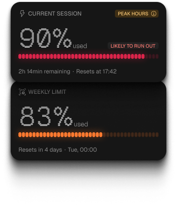
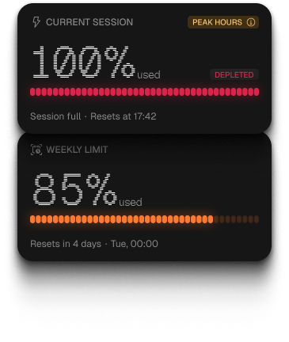

25%
Know your limits before you pause.
Track current usage percentage and your work pace. Know exactly how many minutes remain before your session window resets.
5-hour session quota, weekly limits, and countdown to your next reset — right in your Windows tray with native toast notifications.
winget install win-siphon
Native Siphon panel · illustrative quota data
Under 30MB of memory. Zero Electron, zero slowdown for your Windows system.
OAuth tokens encrypted locally with Windows Data Protection API.
Direct endpoint communication with Anthropic. Zero middleman proxies.
Cost estimations calculated offline straight from your ~/.claude files.
Keep an eye on sessions, weekly quotas, reset countdowns, and floating widgets without breaking your terminal flow.

Dashboard demonstration · 5h session quota and weekly limits
Widgets demonstration · classic and pill layouts always on top
Your 5-hour quota has fully reset. You can pick up right where you left off.
Alerts demonstration · reset notification scheduled for the exact second
Everything you need to pace your workflow without disrupting your terminal focus.
Track current usage percentage and your work pace. Know exactly how many minutes remain before your session window resets.
Siphon schedules a native Windows notification for the exact second of your reset. If you launch later, it catches you up.
Choose between a classic widget with full countdowns or a discreet pill that stays anchored anywhere on your screen.
Set distinct sounds and tray cues for 70%, 90%, and 100% so you are never surprised midway through a complex task.
Token estimates and daily/monthly spending calculated directly from your local Claude Code logs on your drive.
Control startup behavior, configure multi-monitor positions, and integrate smoothly with your command-line workflow.
16 two-channel tray icons reflect both session and weekly usage in real time

Healthy Quota (0–69%)
Moderate Alert (70–89%)
Quota Low (90–99%)
Awaiting Reset (100%)No extra accounts. Zero telemetry or background trackers. Your usage estimates are computed right on your PC and authentication talks directly with Anthropic.
Read the complete privacy policyClaude Code cache files are parsed and aggregated on disk without transmitting anywhere.
Secure OAuth flow with ephemeral loopback callback and Windows DPAPI protected storage.
Install once, connect your Claude Code account, and keep absolute clarity in your tray.
Per-user Windows installer. No administrator elevation needed, with seamless update checks.
Download Setup (.exe)Install or upgrade Siphon with a single command straight through the Windows terminal.
winget install win-siphon
Standalone executable with no installer. Ideal to run from USB drives or restricted developer environments.
View on GitHub Releases →Everything you need to know about how Siphon runs on your machine.
Siphon uses Anthropic's standard PKCE OAuth flow. It opens an ephemeral loopback port, directs your browser to Anthropic's authorization page, and safely captures the usage token — identical to how Claude Code authorizes.
No. Siphon is a companion tray monitor and floating widget, designed so you never have to type /cost or pause your work to check when your session resets.
Yes. Siphon has no cloud servers, intermediate relays, or tracking telemetry. Your credentials are encrypted on your local machine using the native Windows DPAPI cipher.
When your 5-hour session reaches 100%, Siphon reads the exact resets_at timestamp from Anthropic's API and schedules a native Windows toast notification to alert you the moment you are unblocked.
Siphon is built natively for Windows 10 and Windows 11 (64-bit), with full support for multi-monitor setups and varied DPI scaling.